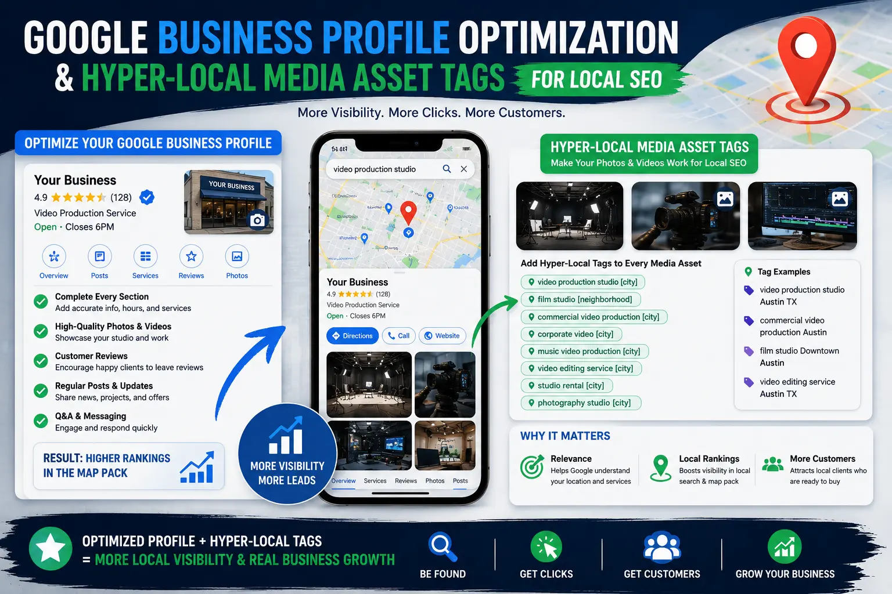
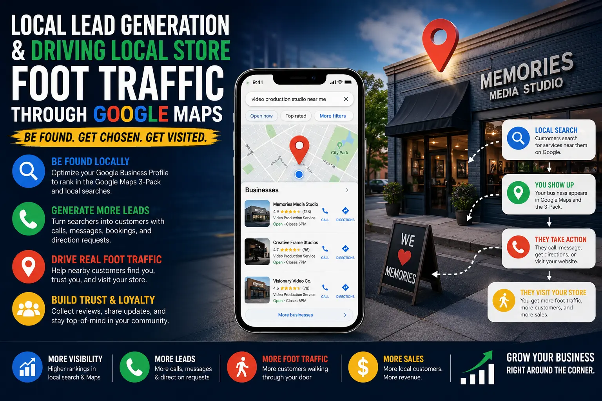

Pushing Your Physical Media Studio Into the Google Maps 3-Pack
Why the Maps 3-Pack Is the Most Valuable Real Estate for Physical Studios
For photography and videography studios that operate from a physical location — a commercial studio space, a shopfront office, or a dedicated production facility — the Google Maps 3-Pack is the single most valuable piece of digital real estate available. When a prospective client in your city searches for "photography studio near me," "product photoshoot Madurai," or "video production company," the three businesses that appear in the Maps block at the top of the search results page capture the vast majority of local clicks, calls, and direction requests.
Ranking in this 3-Pack is not a matter of luck or brand size — it is the result of systematic Google Business Profile Optimization combined with a disciplined Local Lead Generation strategy that builds the specific signals Google's local algorithm evaluates. Every creative studio — regardless of size — can compete for the 3-Pack by executing the right technical and content workflows consistently.
Understanding the Google Maps ranking factors 2026 is the foundation: relevance, distance, and prominence. Distance is fixed by your physical location, but relevance and prominence are entirely within your control. This guide breaks down the specific actions that build each signal, from profile configuration and media uploads to review management and local content strategy.
Foundation: Configuring Your Google Business Profile for Maximum Relevance
The starting point for Google Business Profile Optimization is ensuring that every configurable field in your profile is complete, accurate, and aligned with the search queries your ideal clients use:
- Business name, category, and description. Your business name should be your real, registered business name — not a keyword-stuffed variation. Select the most specific primary category available (e.g., "Photography Studio" or "Video Production Service" rather than a generic "Media Company"). Write a natural, detailed description that includes your city, your core services, and the types of clients you serve — without forcing keywords unnaturally. This is the foundation of ranking without keyword stuffing.
- NAP consistency (Name, Address, Phone). Ensure your business name, street address, and phone number are identical — character for character — across your Google Business Profile, your website, your social media profiles, and every directory listing. Inconsistent NAP data confuses Google's verification algorithms and weakens your local authority signals.
- Service areas and attributes. Add all relevant service areas beyond your immediate city — surrounding towns, districts, and regions where you serve clients. Select all applicable attributes (e.g., "wheelchair accessible," "free parking," "appointment required") to increase your profile's completeness score.
- Business hours and special hours. Keep your business hours accurate and up to date, including special hours for holidays and events. Profiles with outdated or missing hours are penalised in local rankings because they create a poor user experience for potential visitors.
Complete Profile Authority
Thorough Google Business Profile Optimization ensures every profile field contributes to your relevance score, signalling to Google that your listing is trustworthy and complete.
Geo-Tagged Media Assets
Uploading photos and videos with hyper-local media asset tags — geo-coded EXIF data, local file names, and descriptive captions — strengthens the geographic association between your content and your service area.
Organic Ranking Authority
Building a local search authority framework through consistent NAP citations, authentic reviews, and locally relevant content establishes your studio as the verified authority in your service area.
Foot Traffic Growth
Implementing strategies for driving local store foot traffic — such as Google Posts, direction request optimisation, and review prompts — converts Maps visibility into physical studio visits.

Visual Content: How Geo-Tagged Media Drives Local Rankings
Google's local algorithm heavily weights visual content — profiles with regularly uploaded, geo-tagged photos and videos rank significantly higher than profiles with few or no visual assets. This is where hyper-local media asset tags become a powerful ranking lever:
- Upload professional studio photos weekly. Photograph your studio space, equipment, recent project setups, and team at work. Before uploading, ensure each image's EXIF data contains your studio's GPS coordinates. Name each file with a descriptive, location-inclusive filename (e.g., "madurai-product-photography-studio-setup.webp" rather than "IMG_4521.jpg").
- Upload short video walkthroughs. Film 30-60-second walkthrough videos of your studio space, production equipment, and recent project highlights. Upload these directly to your Google Business Profile — video uploads receive higher engagement rates and signal to Google that your profile is actively maintained.
- Tag all visual content with local captions. When uploading photos to your profile, add captions that naturally include your city name, neighbourhood, and service descriptions. These captions function as contextual signals that reinforce your geographic relevance.
- Encourage client-uploaded photos. When clients visit your studio, encourage them to take photos and upload them to your Google listing through their own accounts. User-generated photos are weighted heavily by Google's algorithm because they represent independent, third-party verification of your business's existence and quality.
Reviews, Citations, and the Local Authority Framework
Beyond profile configuration and visual content, the third pillar of Maps ranking is prominence — how well-known and well-regarded your business is across the web. Building a robust local search authority framework requires systematic work across three channels:
Review Volume and Quality
- Implement a systematic review request workflow — send a direct Google review link to every client within 48 hours of project delivery.
- Respond to every review — positive and negative — within 24 hours, using natural, professional language that references the specific service delivered.
- Aim for 5-10 new reviews per month to maintain a consistent growth trajectory that signals ongoing business activity.
- Never purchase, incentivise, or fabricate reviews — Google's detection algorithms are sophisticated and violations result in profile suspension.
NAP Citation Building
- List your studio on all major Indian business directories: Justdial, Sulekha, IndiaMART, Yellow Pages India, and niche creative directories.
- Ensure your NAP data is identical across every listing — use a spreadsheet to track and audit all citations quarterly.
- Seek listings in local chamber of commerce directories, industry association directories, and local press mentions.
- Remove or correct any duplicate, outdated, or inaccurate listings that could create NAP confusion.
Local Content and Engagement
- Publish Google Posts weekly — share recent project highlights, studio updates, seasonal offers, and event announcements directly on your profile.
- Answer all questions in your profile's Q&A section promptly and thoroughly, using natural language that includes relevant service terms.
- Publish locally relevant blog content on your website that links back to your Google Business Profile — regional business visibility tips and local project case studies are particularly effective.
- Engage with local community events, sponsorships, and collaborations that generate natural local press mentions and backlinks.
Sustainable Ranking: Building Authority Without Shortcuts
The most common mistake studios make in local SEO is attempting to accelerate rankings through artificial tactics — stuffing keywords into the business name, purchasing fake reviews, or creating duplicate listings. These tactics may produce short-term gains but invariably result in penalties, suspensions, or permanent removal from Maps results.
Sustainable local ranking requires ranking without keyword stuffing — building genuine authority through real client relationships, authentic visual documentation of your work, consistent profile activity, and accurate business information across the web. Google's 2026 local algorithm is specifically designed to reward businesses that provide genuine value to local searchers and to penalise businesses that attempt to manipulate signals.
The studios that maintain long-term 3-Pack positions are those that treat their Google Business Profile as a living, active communication channel — not a one-time configuration task. Weekly photo uploads, regular Google Posts, prompt review responses, and continuous citation management are the ongoing activities that sustain ranking performance.

Conclusion
Pushing your physical media studio into the Google Maps 3-Pack is not a one-time optimisation task — it is an ongoing discipline that requires systematic Google Business Profile Optimization, consistent visual content uploads with hyper-local media asset tags, authentic review management, and comprehensive NAP citation building.
Understanding the Google Maps ranking factors 2026 — relevance, distance, and prominence — and building a local search authority framework that strengthens each signal through genuine activity is the path to sustainable local visibility. Combined with regional business visibility tips, strategic Google Posts, and consistent Local Lead Generation workflows, studios can achieve and maintain 3-Pack positions that deliver a steady stream of high-intent local enquiries.
At The PhD Ads, we build comprehensive local SEO systems for creative studios and media businesses — from Google Business Profile Optimization and citation management to geo-tagged media strategies and review workflow design — all built on the principle of ranking without keyword stuffing and driving local store foot traffic through authentic, sustained local authority.
Key Topics
Dominate Your Local Google Maps Results
At The PhD Ads, we build local SEO systems that push creative studios into the Google Maps 3-Pack — through Google Business Profile optimisation, geo-tagged media strategies, review management, and citation building.
Email: team@e2o.in